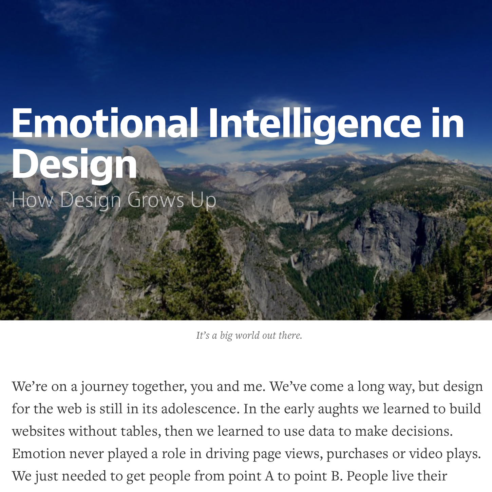

Beth Dean - Emotional Intelligence in Design
Perma🔗 (via The Design Bulletin)

I thoroughly enjoyed Beth Dean's thoughts, insights, and suggestions in this fantastic article. If you have anything to do with design, or interacting with other people via a computer, I highly recommend you read it. Here's just a tease of one of my favorite parts (though it was filled with so many awesome elements, I've saved a copy for myself).
People completing seemingly straightforward tasks do so in a variety of contexts and life circumstances. Humanity can be sad, complicated and messy. We don’t stop being human when we go online. Sometimes even when you’re trying to make something with the best intentions, something can go terribly wrong. Sometimes the very tools you create to protect people cause harm. What can we do?
Really. It's so good.